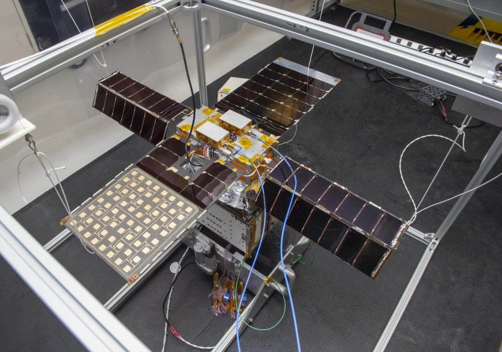
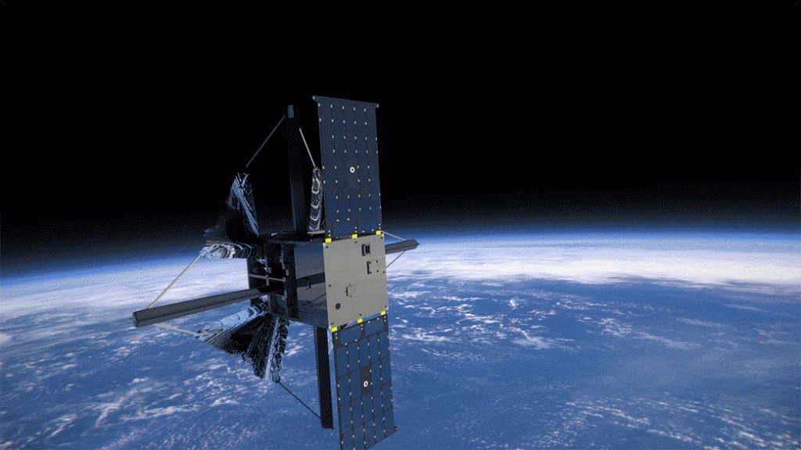
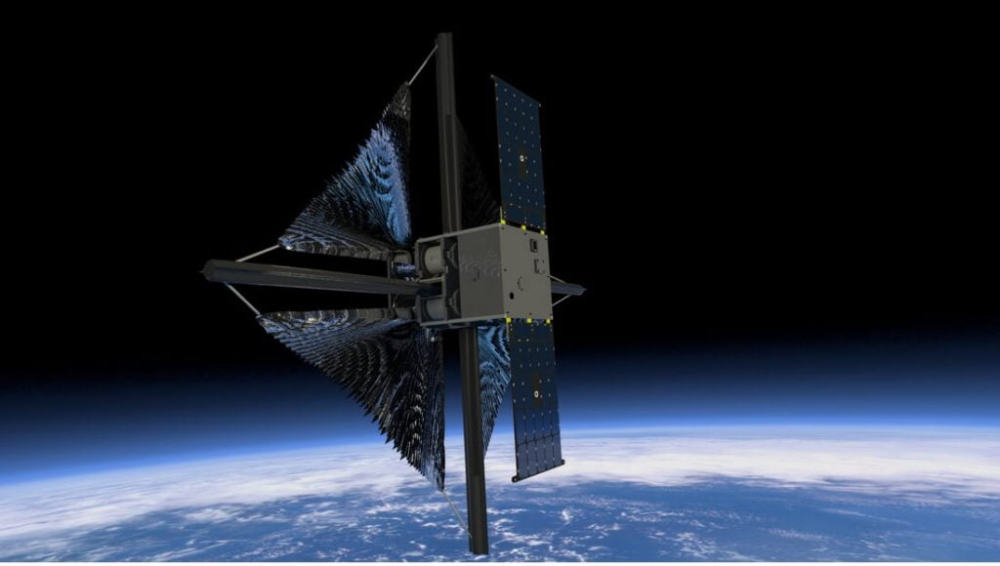
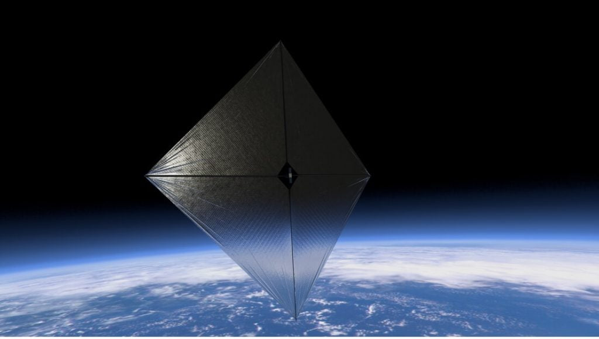

လေဟာနယ်ထဲမှာ ဘယ်လို ရွက်တိုက်မလဲ
အာကာသထဲမှာ လေမှ မရှိတာ ဘယ်လို ရွက်တိုက်မလဲလို့ မေးစရာ ရှိပါတယ်။ ဟုတ်ကဲ့ပါ။ လေမရှိပေမယ့် ရွက်တိုက်လို့ ရပါတယ်တဲ့။ ဒါကတော့ နေကလာတဲ့ အလင်းမှုန် (photon) လေးတွေကို အသုံးချပြီး ရွက်တိုက်တာပဲ ဖြစ်ပါတယ်။အလင်းဟာ အမှုန် သဘာဝ ရှိတယ်ဆိုတာကို သိပ္ပပညာရှင်တွေက လက်တွေ့ ပြပြီး ဖြစ်ပါတယ်။ ဒီအလင်းမှုန် လေးတွေကို Photon လို့ ခေါ်ပါတယ်။ ဒီ Photon တွေကို နေကနေ အမြောက်အများ ထုတ်လွှတ်ပေးပါတယ်။ ဒီအမှုန်တွေကို အသုံးချပြီး ရွက်တိုက်တာပဲ ဖြစ်ပါတယ်။
ဒီ လေဟာနယ်မှာ နေနဲ့ ရွက်တိုက်တဲ့ ယာဉ်မှာ ပါဝင်တဲ့ ရွက်ကို အရောင်ပြောင်လက်ပြီး ပါးလျှာတဲ့ ရွက်ပါဝင်မှာ ဖြစ်ပါတယ်။ ဒီရွက်ကို ပလတ်စတစ်စနဲ့ ပြုလုပ်ထားပြီး အလင်းပြန်အောင် အလူမီနီယယ်နဲ့ အပေါ်ကနေ ဖုံးအုပ်ထားပါတယ်။ ရွက်တစ်ခုလုံးရဲ့ အရွယ်အစားက ပေ ၃၀ ပါတ်လည်လောက် ရှိမှာ ဖြစ်ပါတယ်။
ဒီ အိုင်ဒီယာကို ပထမဆုံး စတင် ကြံစခဲ့သူကတော့ နာမည်ကျော် သိပ္ပံ ဝတ္ထုတွေ ရေးတဲ့ အာသာ စီ ကလပ် (Arthur C. Clarke) ပဲ ဖြစ်ပါတယ်။ ဒီလို အာကာသ လေဟာနယ်ထဲမှာ ရွက်လွှင့်တာကိုလဲ ၂၀၁၉ ခုနှစ်က သိပ္ပံ ပညာရှင်တွေ က ကမ္ဘာပတ်လမ်းကြောင်းထဲ အောင်မြင်စွာ ရွက်လွှင့်ပြီး သက်သေပြခဲ့ပြီး ဖြစ်ပါတယ်။ နာဆာက ဒီအောင်မြင်မှုကို တဆင့်တိုးပြီး ကမ္ဘာပတ် လမ်းကြောင်းလွန် အာကာသ (Deep Space) ထဲထိ ရွက်လွှင့်ပျံသန်းဖို့ ကြံစည်တာပဲ ဖြစ်ပါတယ်။

နေလှိုင်းစီး ရွက်တိုက်နည်းကို ဘယ်နေရာမှာ အသုံးချကြမလဲ
ဒီနည်းစနစ်ရဲ့ အဓီက အားသာချက်ကတော့ အာကာသယာဉ်ဟာ လောင်စာဆီ သယ်ဆောင်သွားစရာ မလိုတာပဲ ဖြစ်ပါတယ်။ ဒီနည်းနဲ့ ကုန်ပစ္စည်း အသေးလေးတွေကို ဝေးလံတဲ့ အရပ်တွေဆီ ဈေးနှုန်း သက်သက်သာသာနဲ့ ပို့ဆောင်ပေးနိုင်မှာ ဖြစ်ပါတယ်။“ဒီ အာကာသ လေဟာနယ် ရွက်တိုက်တဲ့ နည်းဟာ လောင်စာဆီ များများ မသယ်နိုင်တဲ့ အာကာသယာဉ် အသေးလေးတွေအတွက် အထူးပဲ အသုံးဝင်ပါတယ်” လို့ ဂျွန်ဆန် က ဆက်ပြောပါတယ်။

NEA Scout ဟာ နေလှိုင်းစီး ရွက်လွှင့်ပြီး သူ့ရဲ့ ၂ နှစ်တာ ခရီးကို မကြာမီ စတင်တော့မှာ ဖြစ်ပါတယ်။ သူ့ရဲ့ ဦးတည်ချက်ကတော့ ကမ္ဘာမြေနဲ့ သိပ်မဝေးတဲ့ နေရာက ဥက္ကာခဲကြီး တစ်ခုစီကိုပဲ ဖြစ်ပါတယ်။ သူ့ရဲ့ ဦးတည်နေရာကို ရောက်ရင် အဆင့်မြင့် ကင်မရာကို အသုံးပြုပြီး ဥက္ကာခဲကြီးရဲ့ အသေးစိတ် ဓါတ်ပုံတွေကို ရိုက်ကူးမှာ ဖြစ်ပါတယ်။

ဒီခရီးကနေ ဥက္ကာခဲ သေးလေးတွေရဲ့ ဖွဲ့စည်းပုံ၊ ပုံသဏ္ဍာန်နဲ့ ပျံသန်းမှု လမ်ကြောင်းတွေကို စူးစမ်းလေ့လာနိုင်မှာ ဖြစ်ပါတယ်။ ဒီ ဥက္ကာခဲ အသေးတွေဟာ ကမ္ဘာနဲ့ နီးကပ်စွာ ပျံသန်းတတ်ကြပြီး ကမ္ဘာ့လေထုထဲ ဝင်ရောက်လာနိုင်တဲ့ အန္ဒရာယ်လဲ ရှိတာမို့ အခုရှာဖွေ စူးစမ်းမှုက ရတဲ့ အချက်တွေဟာ အနာဂါတ်မှာ ကမ္ဘာမြေကို ဥက္ကာခဲတွေ ဝင်ရောက်ဖျက်စီးမှုက ကာကွယ်ဖို့ အရေးပါတဲ့ အခြေခံ အချက်အလက်တွေ ဖြစ်လာမှာ ဖြစ်ပါတယ်။ နောက်ပြီး အာကာသ ယာဉ်တွေ ကို ဥက္ကာပျံတွေ ရန်ကနေ ကာကွယ်ဖို့အတွက်လဲ အသုံးဝင်လာမှာ ဖြစ်ပါတယ်။
